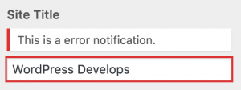

Tools for Improved User Experience
Topics
Contextual Controls, Sections, and Panels Contextual Controls, Sections, and Panels
WordPress 4.0 and 4.1 also added support for making parts of the Customizer UI be visible or hidden depending on the part of the site that the user was previewing within the Customizer preview window. A simple contextual control example would be that your theme only displays the header image and the site tagline on the front page. This is a perfect use case for the Customizer Manager’s get_ methods, as we can modify the core controls for these settings directly to make them contextual to the front page:
// Hide core sections/controls when they aren't used on the current page. $wp_customize->get_section( 'header_image' )->active_callback = 'is_front_page'; $wp_customize->get_control( 'blogdescription' )->active_callback = 'is_front_page';
In this contextual control example, the theme only displays the site tagline on the front page, so the corresponding field in the Customizer is hidden when the user navigates to a different page within the preview window.
The active_callback parameter for Panels, Sections, and Controls takes a callback function name, either core or custom. This parameter can also be set when registering the object for objects that you add. Here’s an example from the Twenty Fourteen Theme:
$wp_customize->add_section( 'featured_content', array( 'title' => __( 'Featured Content', 'twentyfourteen' ), 'description' => //... 'priority' => 130, 'active_callback' => 'is_front_page', ) );
In the previous example, is_front_page is used directly. But for more complex logic, such as checking if the current view is a page (or even a specific page, by id), custom functions can be used (see #30251 for details on why this is needed). If you don’t need to support PHP 5.2, this can be done inline:
'active_callback' => function () { return is_page(); }
PHP 5.2 support is as simple as creating a named function and referencing it with the active_callback parameter:
//...
'active_callback' => 'prefix_return_is_page';
//...
function prefix_return_is_page() {
return is_page();
}
Within Custom Controls, Sections, and Panels, there is also an option to override the active_callback function directly within the custom Customizer object class:
class WP_Customize_Greeting_Control extends WP_Customize_Control {
// ...
function active_callback() {
return is_front_page();
}
}
Finally, there is a filter that can be used to override all other active_callback behavior:
// Hide all controls without a description when previewing single posts.
function title_tagline_control_filter( $active, $control ) {
if ( '' === $control->description ) {
$active = is_singular();
}
return $active;
}
add_filter( 'customize_control_active', 'title_tagline_control_filter', 10, 2 );
Note that the active_callback API works exactly the same for all of the Customizer object types (Controls, Sections, and Panels). As an added bonus, sections will automatically be hidden if all of the controls within them are contextually hidden, and the same works for panels.
Selective Refresh: Fast, Accurate Updates Selective Refresh: Fast, Accurate Updates
Introduced in WordPress 4.5, Selective Refresh updates in the Customizer “preview” only refresh areas whose associate settings are changed. By only updating the elements that have changed, it’s much faster and less disruptive than a full-iframe refresh. Some other benefits, as noted in Selective Refresh In The Customizer, are:
- Don’t Repeat Yourself (DRY) logic
- Accurate preview update
- Association between parts of the preview and associated settings and controls, along with visible edit shortcuts as of WordPress 4.7
The logic in pure-JavaScript postMessage updates is duplicated. The JavaScript in the Customizer must mirror the PHP that produces the markup, or take shortcuts to approximate it. But Selective Refresh is DRY as there’s no duplication of JavaScript and PHP. An Ajax request retrieves the new markup for the preview.
And because of this Ajax call, the refresh is accurate. It uses the filters that can alter the markup. It shows the same result that appears on the front end.
Additionally, selective refresh partials provide an association between areas of the preview and their corresponding settings. The customizer leverages this relationship to provide visible edit shortcuts that help users find controls associated with a particular part of their site. In the future the partials API could expand to facilitate editing settings directly within the preview and to include a structured JS API for previewing settings with partials.
For these reasons, all settings are strongly recommended to leverage selective refresh transport for improved user experience, with the option of providing additional JavaScript-based transport to further enhance setting previewing.
Registering Partials Registering Partials
Setting previews need to opt-in to use Selective Refresh by registering the necessary partials. In this example, largely taken from the them Twenty Sixteen, Selective Refresh is added for the blogdescription setting by adding a partial with the same name.
function foo_theme_customize_register( WP_Customize_Manager $wp_customize ) {
$wp_customize->selective_refresh->add_partial( 'blogdescription', array(
'selector' => '.site-description',
'container_inclusive' => false,
'render_callback' => function() {
bloginfo( 'description' );
},
) );
}
add_action( 'customize_register', 'foo_theme_customize_register' );
If the settings argument is not supplied, it defaults to be the same as the partial ID, in the same way as the settings for controls default to the control ID. Here are some of the key arguments for partials:
| Variable | Type | Description |
settings |
array | Setting IDs associated with the partial. |
selector |
string | Targets the element(s) in the page markup to be refreshed. |
container_inclusive |
boolean | If true, a refresh replaces the entire container. Otherwise, it only replaces the container’s children. Defaults to false. |
render_callback |
function | Produces the markup to be rendered on refresh. |
fallback_refresh |
bool | Whether or not a full page refresh should occur if the partial is not found in the document. |
Selective Refresh JavaScript Events Selective Refresh JavaScript Events
These fire on wp.customize.selectiveRefresh:
partial-content-rendered
When the placement is rendered. As mentioned, JavaScript-driven widgets can re-build on this event.render-partials-response
When data is returned, after a request for partial rendering. The server filters this data with ‘customize_render_partials_response’.partial-content-moved
When a widget has moved in its sidebar. As shown above, JavaScript-driven widgets can refresh on this event.widget-updated
When theWidgetPartialis refreshed with itsrenderContentmethod.sidebar-updated
When a sidebar has a widget that’s refreshed or updated. Or when a sidebar’s widgets are sorted, usingreflowWidgets().
Widgets: Opting-In To Selective Refresh Widgets: Opting-In To Selective Refresh
Both themes and widgets need to opt-in to use Selective Refresh. All core widgets and themes have already enabled this.
Theme Support In Sidebars Theme Support In Sidebars
In order to allow partial refreshes of widgets in a theme’s sidebars:
add_theme_support( 'customize-selective-refresh-widgets' );
Important: Selective refresh for widgets requires that the theme include a before_widget/after_widget wrapper element around each widget that contains the widget’s ID. Such wrappers are the default when you register_sidebar(). For example:
function example_widgets_init() {
register_sidebar(
array(
'name' => esc_html__( 'Sidebar', 'example' ),
'id' => 'sidebar-1',
'description' => esc_html__( 'Add widgets here.', 'example' ),
'before_widget' => '<section id="%1$s" class="widget %2$s">', // <= Key for selective refresh.
'after_widget' => '</section>',
'before_title' => '<h2 class="widget-title">',
'after_title' => '</h2>',
)
);
}
add_action( 'widgets_init', 'example_widgets_init' );
Widget Support Widget Support
Even if a theme supports Selective Refresh, widgets also have to opt-in. All core widgets have already enabled it. Here’s an example widget adding support for Selective Refresh:
class Foo_Widget extends WP_Widget {
public function __construct() {
parent::__construct(
‘foo’,
__( 'Example', 'bar-plugin' ),
array(
'description' => __( ‘An example widget’, ‘bar-plugin’ ),
'customize_selective_refresh' => true,
)
);
if ( is_active_widget( false, false, $this->id_base ) || is_customize_preview() ) {
add_action( 'wp_enqueue_scripts', array( $this, 'enqueue_scripts' ) );
}
}
...
Line 9 above enables Selective Refresh:
'customize_selective_refresh' => true,
Line 13 above ensures the widget’s stylesheet always appears in Customizer sessions. Adding the widget won’t cause a full-page refresh to retrieve the styling:
if ( is_active_widget( false, false, $this->id_base ) || is_customize_preview() ) {
add_action( 'wp_enqueue_scripts', array( $this, 'enqueue_scripts' ) );
}
See Implementing Selective Refresh Support for Widgets.
JavaScript-Driven Widget Support JavaScript-Driven Widget Support
Widgets that rely on JavaScript for their markup will need additional steps, as shown in Implementing Selective Refresh Support for Widgets:
- Enqueue any JavaScript files based on
is_customize_preview(), as shown above for stylesheets. - Add a handler for the
partial-content-renderedevent, and refresh the widget as needed:
wp.customize.selectiveRefresh.bind( 'partial-content-rendered', function( placement ) {
// logic to refresh
} );
- If the widget includes an iframe, add a handler to refresh the partial:
wp.customize.selectiveRefresh.bind( 'partial-content-moved', function( placement ) {
// logic to refresh, perhaps conditionally
}
Using PostMessage For Improved Setting Previewing Using PostMessage For Improved Setting Previewing
The Customizer automatically handles previewing all settings out-of-the-box. This is done by silently reloading the entire preview window, with settings being filtered by PHP in that Ajax call. While this works just fine, it can be very slow since the entire front-end must be reloaded for every single setting change. Selective Refresh improves this experience by refreshing only the elements that have changed, but due to the Ajax call, there is still a delay in seeing the changes in the preview.
To further improve the user experience, the Customizer offers an API for managing setting changes directly in JavaScript, allowing for truly-live previewing. The below images show a comparison of a Custom CSS option that leverages this technology, called postMessage, versus the standard refresh option:
Custom CSS setting in the Customizer with the postMessage setting transport.
Custom CSS setting in the Customizer with the default refresh setting transport.
To use postMessage, first set the transport parameter to postMessage when adding your setting. Many themes also modify core settings such as the title and tagline to leverage postMessage by modifying the transport property of those settings:
$wp_customize->get_setting( 'blogname' )->transport = 'postMessage'; $wp_customize->get_setting( 'blogdescription' )->transport = 'postMessage';
Once the setting’s transport is set to postMessage, the setting will no longer trigger a refresh of the preview when its value changes. To implement the JavaScript to update the setting within the preview of the front-end, first create and enqueue a JavaScript file:
function my_preview_js() {
wp_enqueue_script( 'custom_css_preview', 'path/to/file.js', array( 'customize-preview', 'jquery' ) );
}
add_action( 'customize_preview_init', 'my_preview_js' );
Your JavaScript file should look something like this:
( function( $ ) {
wp.customize( 'setting_id', function( value ) {
value.bind( function( to ) {
$( '#custom-theme-css' ).html( to );
} );
} );
wp.customize( 'custom_plugin_css', function( value ) {
value.bind( function( to ) {
$( '#custom-plugin-css' ).html( to );
} );
} );
} )( jQuery );
Note that you don’t necessarily need to be great with JavaScript to use postMessage – most of the code is boilerplate. The types of settings that benefit most from postMessage transport require simple JS changes such as using jQuery’s .html() or .text() methods, or swapping out a class on the <body> or another element to trigger a different set of CSS rules. Doing this, or simplifying the instant preview logic with fully-accurate changes updating with selective refresh, the user experience can be fast without duplicating all of the PHP logic in JS.
Setting Validation Setting Validation
WordPress 4.6 includes new APIs related to validation of Customizer setting values. The Customizer has had sanitization of setting values since it was introduced. Sanitization involves coercing a value into something safe to persist to the database: common examples are converting a value into an integer or stripping tags from some text input. As such, sanitization is a lossy operation. With the addition of setting validation:
- All modified settings are validated up-front before any of them are saved.
- If any setting is invalid, the Customizer save request is rejected: a save thus becomes transactional with all the settings left dirty to try saving again. (The Customizer transactions proposal is closely related to setting validation here.)
- Validation error messages are displayed to the user, prompting them to fix their mistake and try again.
Sanitization and validation are also both part of the REST API infrastructure via WP_REST_Request::sanitize_params() and WP_REST_Request::validate_params(), respectively. A setting’s value goes through validation before it goes through sanitization.
For more information on the validation behavior, and additional code examples, see the feature announcement post.
Validating Settings in PHP Validating Settings in PHP
Just as you can supply a sanitize_callback when registering a setting, you can also supply a validate_callback arg:
$wp_customize->add_setting( 'established_year', array(
'sanitize_callback' => 'absint',
'validate_callback' => 'validate_established_year'
) );
function validate_established_year( $validity, $value ) {
$value = intval( $value );
if ( empty( $value ) || ! is_numeric( $value ) ) {
$validity->add( 'required', __( 'You must supply a valid year.' ) );
} elseif ( $value < 1900 ) {
$validity->add( 'year_too_small', __( 'Year is too old.' ) );
} elseif ( $value > gmdate( 'Y' ) ) {
$validity->add( 'year_too_big', __( 'Year is too new.' ) );
}
return $validity;
}
Just as supplying a sanitize_callback arg adds a filter for customize_sanitize_{$setting_id}, so too supplying a validate_callback arg will add a filter for customize_validate_{$setting_id}. Assuming that the WP_Customize_Setting instances apply filters on these in their validate methods, you can add this filter if you need to add validation for settings that have been previously added.
The validate_callback and any customize_validate_{$setting_id} filter callbacks take a WP_Error instance is its first argument (which initially is empty of any errors added), followed by the $value being sanitized, and lastly the WP_Customize_Setting instance that is being validated.
Custom setting classes can also override the validate method of the setting class directly.
Client-side Validation Client-side Validation
If you have a setting that is previewed purely via JavaScript (and the postMessage transport without selective refresh), you should also add client-side validation. Otherwise, any validation errors will persist until a full refresh happens or a save is attempted. Client-side validation must not take the place of server-side validation, since malicious users could bypass the client-side validation to save an invalid value if corresponding server-side validation is not in place.
There is a validate method available on the wp.customize.Setting JS class (actually, the wp.customize.Value base class). Its name is a bit misleading, as it actually behaves very similarly to the WP_Customize_Setting::sanitize() PHP method, but it can be used to both sanitize and validate a value in JS. Note that this JS runs in the context of the Customizer pane not the preview, so any such JS should have customize-controls as a dependency (not customize-preview) and enqueued during the customize_controls_enqueue_scripts action. Some example JS validation:
wp.customize( 'established_year', function ( setting ) {
setting.validate = function ( value ) {
var code, notification;
var year = parseInt( value, 10 );
code = 'required';
if ( isNaN( year ) ) {
notification = new wp.customize.Notification( code, {message: myPlugin.l10n.yearRequired} );
setting.notifications.add( code, notification );
} else {
setting.notifications.remove( code );
}
code = 'year_too_small';
if ( year < 1900 ) {
notification = new wp.customize.Notification( code, {message: myPlugin.l10n.yearTooSmall} );
setting.notifications.add( code, notification );
} else {
setting.notifications.remove( code );
}
code = 'year_too_big';
if ( year > new Date().getFullYear() ) {
notification = new wp.customize.Notification( code, {message: myPlugin.l10n.yearTooBig} );
setting.notifications.add( code, notification );
} else {
setting.notifications.remove( code );
}
return value;
};
} );
Notifications Notifications
Notifications provide user feedback, typically based on the value of a control’s setting. An error notification is added to a setting’s notifications collection when a setting’s validation routine returns a WP_Error instance. Each error added to a PHP WP_Error instance is represented as a wp.customize.Notification in JavaScript:
- A
WP_Error‘scodeis available asnotification.codein JS. - A
WP_Error‘smessageis available asnotification.messagein JS. Note that if there are multiple messages added to a given error code in PHP they will be concatenated into a single message in JS. - A
WP_Error‘sdatais available asnotification.datain JS. This is useful to pass additional error context from the server to the client.
Any time that a WP_Error is returned from a validation routine on the server it will result in a wp.customize.Notification being created with a type property of “error”.
While setting non-error notifications from PHP is not currently supported (see #37281), you can also add non-error notifications with JS as follows:
wp.customize( 'blogname', function( setting ) {
setting.bind( function( value ) {
var code = 'long_title';
if ( value.length > 20 ) {
setting.notifications.add( code, new wp.customize.Notification(
code,
{
type: 'warning',
message: 'This theme prefers title with max 20 chars.'
}
) );
} else {
setting.notifications.remove( code );
}
} );
} );
You can also supply “info” as a notification’s type. The default type is “error”. Custom types may also be supplied, and the notifications can be styled with CSS selector matching notice.notice-foo where “foo” is the type supplied. A control may also override the default behavior for how notifications are rendered by overriding the wp.customize.Control.renderNotifications method.